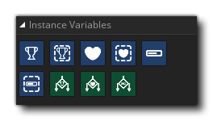

Las acciones de Variables de instancia están diseñadas para que comiences a crear un juego y se usan para crear y mantener variables de ámbito de instancia específicas para score, lives y health (puede obtener más información sobre el alcance variable aquí ). Estas acciones crearán estas variables para usted en cualquier momento en que se utilicen y se usen por conveniencia o para principiantes, y si necesita un control más complejo sobre los valores del juego, debe hacer sus propias variables utilizando las acciones apropiadas (ver aquí )
Las siguientes acciones existen para usar estas variables de instancia:
 | Establecer puntaje |
 | Obtener puntaje |
| Establecer vidas | |
 | Obtener vidas |
 | Establecer salud |
 | Obtener salud |
 | Si Score |
 | Si vive |
| Si la salud |